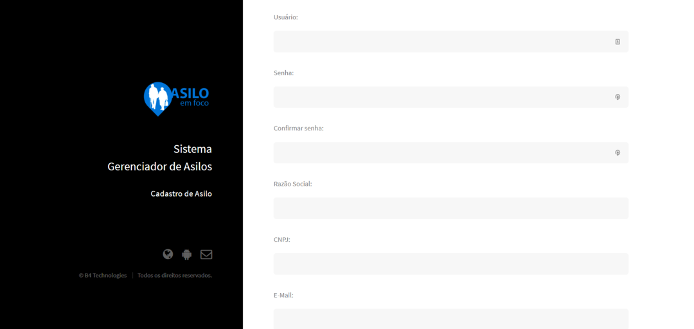
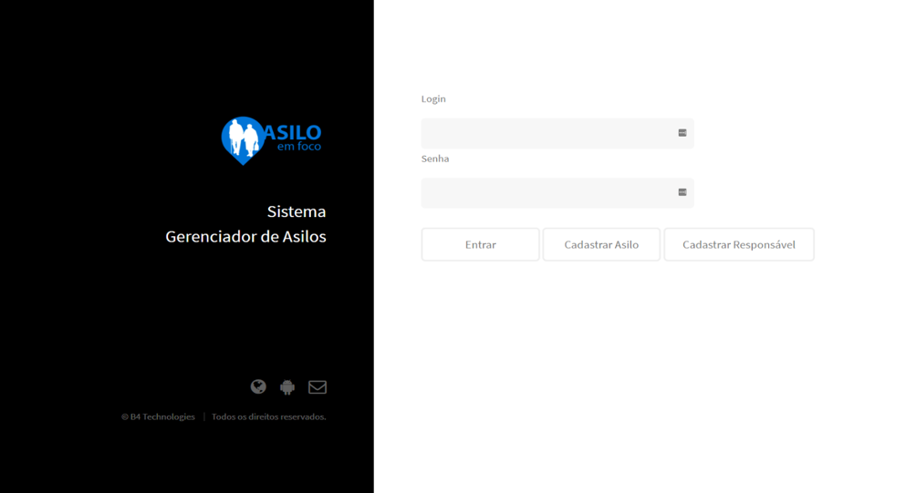
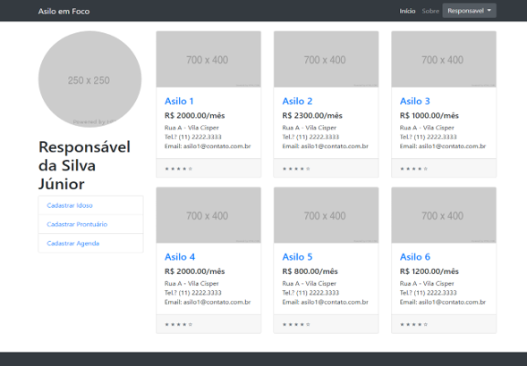
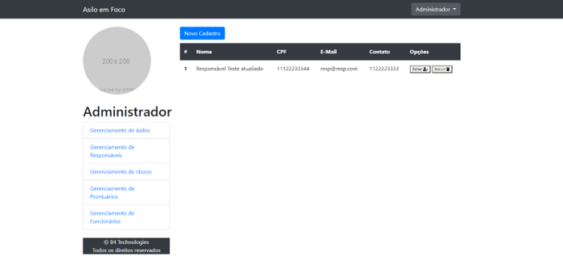
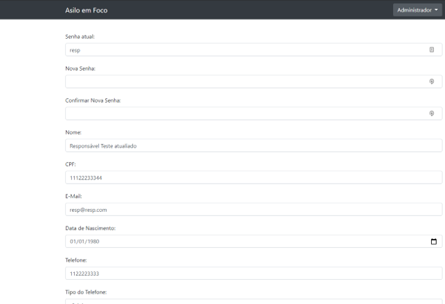

Tecnologias Utilizadas


O site do Asilo em Foco é um sistema web gerenciador de asilos, esse projeto foi desenvolvido juntamente com um colega para o trabalho de conclusão de curso ( TCC ) no técnico em Desenvolvimento de Sistemas da ETEC. No projeto fiquei responsável por toda a parte do Back End juntamente com o Banco de Dados e ajudando em pequenas partes do Front End. Com este projeto consegui desenvolver minhas skills de trabalho em equipe e prazos de entregas.




